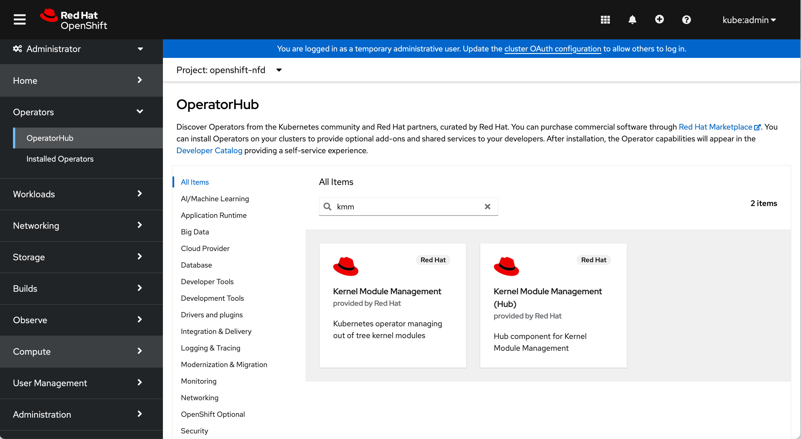

Deploy AMD GPU Operator on OpenShift Cluster from Helm Chart
1. PreCheck
The OpenShift cluster should be up and running as an assumption, the following operators should be enabled in order to properly deploy and use AMD GPU Operator. They are enabled by-default for the Openshift cluster.
- 1.1 Service-CA Service-CA operator will be used to sign the certificate and ingest the certificate into webhook server, in order to authenticate the communication between kube-api-server and KMM webhook server.
[core@68-05-ca-a8-3d-c8 ~]$ oc get pods -A | grep service-ca
openshift-service-ca-operator service-ca-operator-7d65f5495d-tjztl 1/1 Running 7 35d
openshift-service-ca service-ca-585754fd76-9qz66 1/1 Running 6 35d
- 1.2 MachineConfig Operator MachineConfig operator is required for configuring the blacklist on inbox amdgpu driver.
[core@68-05-ca-a8-3d-c8 ~]$ oc get pods -A | grep machine-config
openshift-machine-config-operator kube-rbac-proxy-crio-68-05-ca-a8-3d-c8 1/1 Running 12 35d
openshift-machine-config-operator machine-config-controller-5bdbbc9cf4-9zhzv 2/2 Running 14 35d
openshift-machine-config-operator machine-config-daemon-76cqc 2/2 Running 22 35d
openshift-machine-config-operator machine-config-operator-86b6764d7-2phqs 2/2 Running 14 35d
openshift-machine-config-operator machine-config-server-rghbg 1/1 Running 8 35d
- 1.3 Cluster Image Registry Operator Cluster image registry operator is required to trigger the driver image build within OpenShift cluster, as well as storing driver image if users want to use OpenShift internal registry.
[core@68-05-ca-a8-3d-c8 ~]$ oc get pods -A | grep image-registry
openshift-image-registry cluster-image-registry-operator-66544d6c88-zw829 1/1 Running 6 35d
openshift-image-registry node-ca-mdlvp 1/1 Running 8 35d
2. Install
2.1 Option 1 - Install everything from one Helm Chart
Users could install all the AMD GPU Operator components and all dependencies from one helm chart bundle. Once the helm chart tgz file was downloaded, run the following command to install everything from one single Helm Chart.
helm install test ./gpu-operator-helm-openshift-0.0.1.tgz -n kube-amd-gpu --create-namespace
Example Output
NAME: test
LAST DEPLOYED: Wed Oct 9 21:19:13 2024
NAMESPACE: kube-amd-gpu
STATUS: deployed
REVISION: 1
TEST SUITE: None
After the installation all the resources would be deployed into OpenShift cluster.
NAME READY STATUS RESTARTS AGE
nfd-master-67b568b89c-lvk9k 1/1 Running 0 12m
nfd-worker-nkrgl 1/1 Running 0 12m
test-gpu-operator-controller-manager-56844b49b4-tk75f 1/1 Running 0 12m
test-kmm-controller-78ddd75846-kxd8n 1/1 Running 0 12m
test-kmm-webhook-server-749cb8b565-ktbsp 1/1 Running 0 12m
test-nfd-controller-manager-77764d98c5-h76pp 2/2 Running 0 12m
2.2 Option 2 - Install dependencies separately
Users could also install dependencies separatly, then install the AMD GPU Operator.
2.2.1 Install Node Feature Discovery (NFD) Operator
Go to the OepnShift Web Console and select OperatorHub, search for the Node Feature Discovery operator, then install the RedHat version operator on users OpenShift cluster.

2.2.2 Install Kernel Module Management (KMM) Operator
Go to the OepnShift Web Console and select OperatorHub, search for the Kernel Module Management operator, then install the RedHat version without Hub label on users OpenShift cluster.

2.2.3 Install Operator
Users could install all the AMD GPU Operator components and skip installing dependencies that are already installed in the cluster. Once the helm chart tgz file was downloaded, run the following command to install everything from one single Helm Chart. The option --set nfd.enabled=false and --set kmm.enabled=false is used for skipping installation of Node Feature Discovery operator and Kernel Module Management operator, respectively.
helm install test ./gpu-operator-helm-openshift-0.0.1.tgz -n kube-amd-gpu --create-namespace --set nfd.enabled=false --set kmm.enabled=false
Example Output
NAME: test
LAST DEPLOYED: Wed Oct 9 21:19:13 2024
NAMESPACE: kube-amd-gpu
STATUS: deployed
REVISION: 1
TEST SUITE: None
After the installation AMD GPU Operator would be deployed into OpenShift cluster. The NFD and KMM operator would be running at the namespaces where users separately installed them.
NAME READY STATUS RESTARTS AGE
test-gpu-operator-controller-manager-56844b49b4-tk75f 1/1 Running 0 12m
3. Create Custom Resource (CR)
3.1 Create Node Feature Dsicovery Rule
In order to detect which OpenShift worker node has AMD GPU hardware installed, the NFD operator could help users do the detection by searching among the PCI device list.
Users could create this resource to the cluster, then AMD GPU PCI device could be detected by NFD operator, and corresponding worker node will be labeled as feature.node.kubernetes.io/amd-gpu: "true"
apiVersion: nfd.openshift.io/v1
kind: NodeFeatureDiscovery
metadata:
name: amd-gpu-operator-nfd-instance
namespace: default
spec:
operand:
image: quay.io/openshift/origin-node-feature-discovery:4.16
imagePullPolicy: IfNotPresent
servicePort: 12000
workerConfig:
configData: |
core:
sleepInterval: 60s
sources:
pci:
deviceClassWhitelist:
- "0200"
- "03"
- "12"
deviceLabelFields:
- "vendor"
- "device"
custom:
- name: amd-gpu
labels:
feature.node.kubernetes.io/amd-gpu: "true"
matchAny:
- matchFeatures:
- feature: pci.device
matchExpressions:
vendor: {op: In, value: ["1002"]}
device: {op: In, value: ["74a0"]} # MI300A
- matchFeatures:
- feature: pci.device
matchExpressions:
vendor: {op: In, value: ["1002"]}
device: {op: In, value: ["74a1"]} # MI300X
- matchFeatures:
- feature: pci.device
matchExpressions:
vendor: {op: In, value: ["1002"]}
device: {op: In, value: ["740f"]} # MI210
- matchFeatures:
- feature: pci.device
matchExpressions:
vendor: {op: In, value: ["1002"]}
device: {op: In, value: ["7408"]} # MI250X
- matchFeatures:
- feature: pci.device
matchExpressions:
vendor: {op: In, value: ["1002"]}
device: {op: In, value: ["740c"]} # MI250/MI250X
- matchFeatures:
- feature: pci.device
matchExpressions:
vendor: {op: In, value: ["1002"]}
device: {op: In, value: ["738c"]} # MI100
- matchFeatures:
- feature: pci.device
matchExpressions:
vendor: {op: In, value: ["1002"]}
device: {op: In, value: ["738e"]} # MI100
[core@68-05-ca-a8-3d-c8 ~]$ oc get node -oyaml | grep "amd-gpu"
feature.node.kubernetes.io/amd-gpu: "true"
3.2 Create DeviceConfig
DeviceConfig is the custom resource for AMD GPU Operator, by creating the DeviceConfig the operator will be triggered to install AMD GPU driver.
For example:
apiVersion: amd.com/v1alpha1
kind: DeviceConfig
metadata:
name: test-cr
namespace: default
spec:
devicePluginImage: rocm/k8s-device-plugin:latest
driversVersion: el9-6.1.1
selector:
"feature.node.kubernetes.io/amd-gpu": "true"
Then the Operator and its dependencies operators should receive the create event of the DeviceConfig and do proper actions.
- The AMD GPU Operator will collect the worker node's system spec, including Linux distros, release version, kernel version to check whether corresponding driver image exist in the image registry or not.
- If the driver image doesn't exist in the OpenShift internal registry, KMM will init a builder pod to build the driver image within the cluster, then push the built driver image to the registry.
- Once confirmed the worker node's driver image exists, KMM will send a worker pod to the worker node, then the worker pod will pull the prepared driver image to install the kernel module on the worker node by using
modprobecommands.
kmm-worker-68-05-ca-a8-3d-c8-test-cr 1/1 Running 0 6s
- If the installation was successful, ROCM device plugin and node labeller will be deployed on the worker node
test-cr-device-plugin-nf5rp-hjmnw 1/1 Running 0 15s
test-cr-node-labeller-tvf5q 1/1 Running 0 15s
and AMD GPU related labels will be attached to the corresponding worker node, where amd.com/gpu is OpenShift allocatable resource quota of each worker node, users could schedule and request amd.com/gpu resource for their GPU workloads.
[core@68-05-ca-a8-3d-c8 ~]$ oc get node -ojson | grep amd.com
"beta.amd.com/gpu.cu-count.104": "1",
"beta.amd.com/gpu.device-id.740f": "1",
"beta.amd.com/gpu.family.AI": "1",
"beta.amd.com/gpu.simd-count.416": "1",
"beta.amd.com/gpu.vram.64G": "1",
"amd.com/gpu": "1",
"amd.com/gpu": "1",